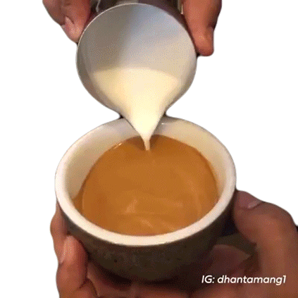

Do
cats
😺🐱
Like
coffee?
☕️
Most
cats
😺🐱
don't like
coffee
☕️
but given their instinct to assess their surroundings,
it's usual to see them loitering around your kitchen, sniffing all the items that tickle their smell.
Cats
😺🐱
s' sense of smell is 14 times better than humans.
Humans only have around five million odor sensors compared to our feline friends' 200 million.
So can they smell a
coffee
☕️
's aroma?
Sure, they do. But do they like it?
Well, that's something only the kittiens know.
More often than not,
they're only around your coffee containers out of curiosity rather than
genuine
love
❤️
aroma?
for your morning drink.
☕️
🐈⬛

Let's go somewhere else!!